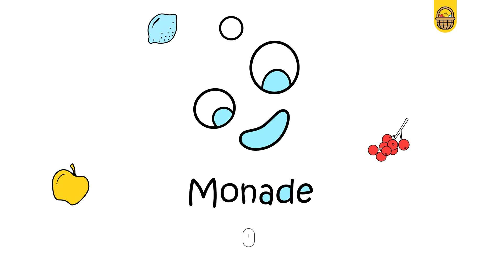
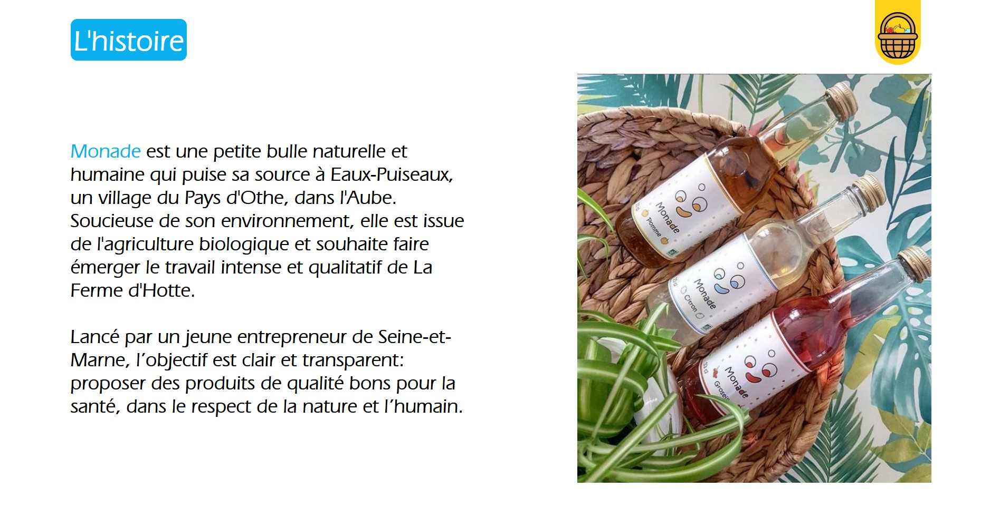
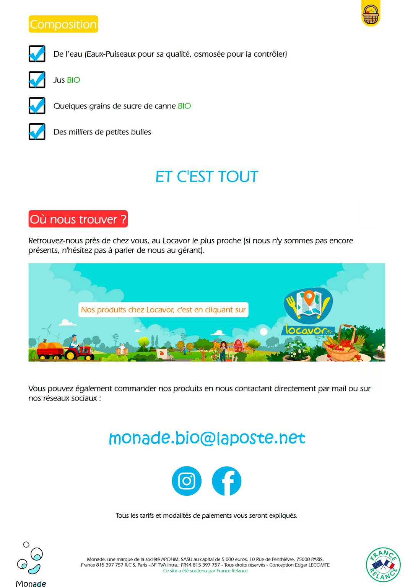

Présentation
Ce projet a été réalisé pour un professionnel de la vente de limonade Bio. Le projet était de réaliser un site vitrine pour expliquer ce que fait la marque et où la retrouver.
Le client n'avait aucune idée de ce qu'il voulait au départ. Après plusieurs maquettes, nous avons décidé de partir sur un style blanc en mettant des touches de couleur pour rappeler celle des fruits utilisés dans les limonades.



Technologies utilisées
Pour réaliser la maquette du site et guider le client afin de correspondre à ses désirs, tout a était fait sur Adobe XD
Pour le développement il à été utilisé du Html, CSS, et du JS pour quelques animations